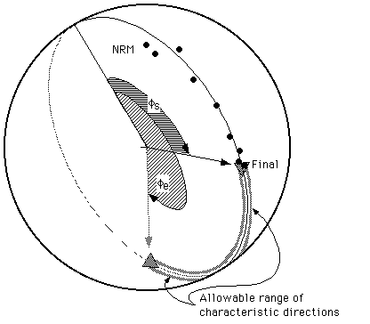
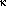
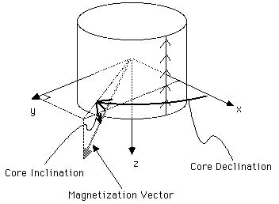

Data and File Format
PaleoMag uses five different kinds of files, all of which
are
stored as text files: .SAM, .LSQ,
.STEP, sample data files, and means files. With version 3.1, Univ.
of Wyoming "APP" format (ascii Ogg format), 2G's binary (.DAT)
format, and a raw AGICO Spinner data format (.JRA) are
supported
as
well as the original CIT format; the .STEP file is now dropped. The first four
of
these
filetypes
must
be
together
in
a
single
folder;
only
the
.SAM and sample data files must be present (PaleoMag will create
the others). The .SAM file gives locality information and a list of the samples
in the locality. Editting this file can allow the user to combine data from several
different localities. The .LSQ file has the least-squares fits made for this
locality.
The .STEP file need not concern most users; it contains a summary of the demag
steps used in the locality and can be regenerated at any time using the Remake .Step command. Each sample data
file contains all the measurements and orientations of a single core. The means
file
need not be in any locality folder and can contain mean directions from several
different localities.
With the creation of version 2.0 of PaleoMag files opened with
PaleoMag have
their creator ID changed to PaleoMag; thus once you have examined a
locality
with PaleoMag, you can open any sample in the locality for examination
merely
by double-clicking on the sample's data file. The data fork of these files in
unaffected and continues to be readable with any text editor and most word
processors. Two strings have been added to the resource fork to permit
PaleoMag to distinguish the five types of files; one indicated the file
type,
and the other has the name of the .SAM file. If you change the
name of the
.SAM file you must either open the locality by openning the .SAM file; opening
any other file in the locality will produce a file not found error. Because
these strings must be present for PaleoMag to open files with a
"Pmag" creator
id, do not ever assign plain text files transfered from another computer the
"Pmag" creator id!
The data format used by PaleoMag is an ascii text file with fixed formats
that
has been in use in the paleomagnetics laboratory at Caltech. A sample
illustrates the format of the .SAM file (note that the top two lines are column
numbers):
000000000111111111122222222223333333333444444444455555555556
123456789012345678901234567890123456789012345678901234567890
CIT
East Rotated Block (East end of block east of West End Wash)
36.2 245.3 14.0 42.2 45.8
erb1.0a 12.3aa
erb2.0a 23.4ab
The first line is a 2003 addition specifying the data format and is either CIT,
2G, APP, or JRA. If absent, the data is assumed to be in CIT format. After
that is a comment line; the fields of the third line are the
locality's latitude (first 5 characters) in °N, locality longitude (next
5
after a space) in °E, and the magnetic declination (next 5 after a space)
in
°E of N. Two fields can follow the magnetic declination: the azimuth
and plunge of a fold axis (both are 5 characters after a space). The following
two
fields (underlined) can be added by PaleoMag and will
usually
be
blank before
using the code. These are the average strike and dip of the beds at the
locality (used for the tilt-corrected reference directions; see "Equal Area
Options..." under the Edit menu, above), both a space and 5 characters.
All
following lines are the filenames of samples from this locality with the
stratigraphic level ( 8 characters and underlined, indicating that it
is added
by PaleoMag to the standard CIT format) and the site id (optional), which is
two letters (case-dependant). For some formats (esp. JRA) the bedding strike
and dip
The sample format is illustrated by the following fragment:
00000000011111111112222222222333333333344444444445555555555666666666677777777778
12345678901234567890123456789012345678901234567890123456789012345678901234567890
erb 1.0A Sample just above tuff
113.0 291.0 63.0 43.0 46.0 1.0
NRM 41.2 49.7 91.4 41.0 3.44E-05 5.5 184.1 -13.1 0.0289 0.0270 0.0468
TT 150 46.7 41.3 84.3 33.7 1.79E-05 7.5 189.4 -20.9 0.0188 0.0130 0.0228
TT 225 55.6 36.8 84.5 25.5 1.44E-05 4.0 197.8 -23.3 0.0193 0.0252 0.0171
In the first line the first four characters are the locality id, the next 9 the
sample id, and the remainder (to 255) is a sample comment.
In the second line, the first character is ignored, the next 6 comprise the
stratigraphic level (usually in meters). The remaining fields are all the same
format: first character ignored (should be a blank space) and then 5 characters
used. These are the core strike, core dip, bedding strike, bedding dip, and
core volume or mass. Conventions are discussed below.
CIT format can include fold axis and plunge, which at present is unused.
The following lines are in the order the demagnetizations were carried out.
The first 2 characters (3 for NRM only) is the demag type (AF for alternating
field, TT for thermal, CH for chemical, etc.), the next 4 (3 for NRM) is the
demag level (°C for thermal, mT for alternating field, etc.), the next
6
(first blank for all the following fields) for geographic ("in situ")
declination of the sample's magnetic vector, next 6 for geographic inclination,
next 6 for stratigraphic declination, next 6 for stratigraphic inclination,
next 9 for normalized intensity (emu/cm^3; multiply by the
core volume/mass to get the actual measured core intensity), next 6 for
measurement error angle, next 6 for core plate declination, next 6 for core
plate inclination, and the final three fields of 8 each are the standard
deviations of the measurement in the core's x, y, and z coordinates in 10^5 emu. NB
in 2003, it appears the CIT format is actually using three final fields of 9
characters, not 8.
Presently only the sample id line, the second line, and the first ten fields
(to core inclination but excepting the error angle) of the demag lines are used
in PaleoMag. Except for the stratigraphic level, info on the second line
is
only displayed in the info window or used in the
"Headers..." command. A
possibility exists that future versions will plot Zijder plots with the
measurement uncertainties.
The least squares file has a similar format:
000000000111111111122222222223333333333444444444455555555556666666666777777777788888888
123456789012345678901234567890123456789012345678901234567890123456789012345678902345678
acg 1.0A L prx 14.1 -9.6 14.6 13.6 F-K 6 0.8
acg 2.0A L prx 24.4 13.6 19.7 37.8 F-IK 5 3.9
acg 2.0A P pox 104.4 76.6 99.7 64.8 F-IK 5 3.9 20.0 150.0 45.8
175.8
The first 14 characters comprise the full sample id. It is followed by the fit
type (L for line, P for plane, C for circle), 2 blanks, and the user-entered 3
letter id code. After a blank, there is the geographic declination and
inclination and the stratigraphic (tilt-corrected) declination and inclination.
After a blank comes the summary of the points used in the least-squares fit;
measurements used are identified by letter (same as in the Data List window--A
through Z then a through z for the first 52 measurements) up to 7 characters,
then the number of points used and the maximum angular deviation (MAD) of the
least squares fit. For plane fits made with v.2.2 and beyond, the rake within
the plane of the farthest point ( s) and the of antipode of the beginning
point (e) are given in the next 28 characters; these values bound the
arc within the plane where the second (characteristic) direction can lie (both
geographic and stratigraphic). Positive values are down and away from the strike of the plane (90°
counterclockwise from the down-dip direction). This information is used by the "Combine lines
and planes" option with the "use arc constraints" option for Fisher statistics.
s) and the of antipode of the beginning
point (e) are given in the next 28 characters; these values bound the
arc within the plane where the second (characteristic) direction can lie (both
geographic and stratigraphic). Positive values are down and away from the strike of the plane (90°
counterclockwise from the down-dip direction). This information is used by the "Combine lines
and planes" option with the "use arc constraints" option for Fisher statistics.

For example, in the figure above (an equal-area plot), the measured directions
did not yield a clean estimate of the characteristic direction, but that
characteristic direction does not lie between the NRM and final directions.
Thus it should lie between the final point and the antipode of the NRM (marked
as "allowable range" in the figure).
The locality means file lacks an analog on the IBM-PC version of the CIT
paleomag system (other files are extensions of the PC versions, with the
exception of the .STEP file). Unlike the other files, it can be shared between
localities. Each locality mean, saved using the "Save Means..." command, fills
3 consecutive lines:
0000000001111111111222222222233333333334444444444555555555566
1234567890123456789012345678901234567890123456789012345678901
acg HLLGprx 23 196.3 -6.6 14.18 14.18 0.00 5.5 5.5
acg HLLTprx 23 197.6 -32.3 14.01 14.01 0.00 5.6 5.6
acg 36.2 245.3 test-3 Hemisphere
acg BLLGprx 23 198.5 -7.2 9.07 14.59 90.10 -7.6 -3.5
acg BLLTprx 23 193.3 -32.0 9.08 14.75 110.49 -7.6 -3.4
acg 36.2 245.3 test-3 Bingham
acg NLLGprx 23 198.5 -7.2 8.28 12.75 90.10 -9.1 -4.5
acg NLLTprx 23 193.3 -32.0 8.45 12.97 110.49 -8.8 -4.4
acg 36.2 245.3 test-3 Watson
The first line has the geographic (in-situ) mean information, the second has
the stratigraphic (tilt-corrected) information, and the third has locality
information. The first two lines have a common format: locality id (4
characters), space, 4 single letter id characters (statistic type, data type,
population type, and geographic or tilt corrected data), a user input 3 letter
id, the number of data points used, declination, inclination, 's (1
and 2; same for Fisher statistics), oval azimuth, and 's (1
and 2;
same for Fisher; meaningless for non-parametric statistics). The statistic
types are true Fisher (F), hemisphere Fisher (H), Bingham (B), and
non-parametric (N). Data types are from least-square fits ("L") and locality-equal
area plots ("E"). Population types are lines (bipolar data; "L"), planes
(girdle data, "P"), and mixed lines and planes ("M"). The third line repeats
the locality name, its latitude and longitude, and the user comment for this
mean.
Addition for 3.1d26 and up: Comment lines (starting with #!) will be ignored.
Color and symbol preferences are stored in the means file in lines with "#!Prefs"
at the start.
Conventions: All magnetization declinations (and azimuths and
strikes) are degrees east of true north, all inclinations are in degrees,
positive down. Bedding strike and strike of a fold axis are all relative to magnetic
north. [NOTE that this differs from older documentation, but this is how
PaleoMag has always worked]. Sample coordinates x, y, and z are a right-handed
coordinate system with the positive x-axis extending from the core center
out through the
"scritch" (the top line of the core) and the positive z-axis parallel
to the core axis and down into the outcrop. For the CIT conventions, core strike
and dip are actually the strike and dip of the plane orthogonal to the core
(the core plate). For bedding, if we define the z axis as perpendicular to bedding
and positive (stratigraphically) downward, the positive x axis as going updip,
and insist on a right-handed coordinate system, then the strike direction is
the azimuth of the positive y direction (to the right as you face up-dip) for
both bedding and core coordinates and the dip is the plunge of the negative
x axis. In this system beds striking N30°W, overturned and dipping 75°
to the southwest would have a strike and dip of 330° and 105°.
A core drilled upward parallel to a line plunging 55° toward S25°E
would have a core plate strike and dip of 25° and 125°; the core
drilled in the opposite direction would have a strike and dip of 205°
and 55°.
Core declination is measured in degrees clockwise from the x axis when viewed
from the negative z direction (see figure below).; core inclination is positive
from the x-y plane toward the positive z-axis.

Error angles reflect the uncertainty of the magnetization vector as reflected
in the difference between the directions determined from the core in up to 8
different orientations in the magnetometer.
APP Format (3.1 only)
A sample fragment of the Wyoming ascii format, which includes all locality
data in a single file:
00000000011111111112222222222333333333344444444445555555555666666666677777777778
12345678901234567890123456789012345678901234567890123456789012345678901234567890
erb EastRotBlck 36.2 245.3 14.0 35 35 19 542 0.0 1
erb 1.000 113.0 27.0 201.0 46.0 43.0 1P 23 38 2
erb 1.000 NRM 0 41.2 49.7 91.4 41.0 3.44E-5 0.0 3
erb 1.000 TT 150 46.7 41.3 84.3 33.7 1.79E-5 000.0 4
erb 1.000 TT 225 55.6 36.8 84.5 25.5 1.44E-5 000.0 5
The first line has the locality information (like in the .SAM
file), with a three letter locality ID, a short name for the locality (columns
6-16), latitude (columns 18-22), longitude (east positive, columns 24-28), magnetic
declination (columns 30-34), and then a host of unused information (number of
lines to reserve for pilot and regular samples, number of samples, total number
of lines; rightmost number is the line number (columns 61-64)).
The succeeding lines will repeat for each sample in the file, one sample header
line and then lines for each measurement. The sample header line
has the sample name (locality name (usually) in columns 1-4 and sample number
in 5-12 with a letter ID in column 13), the stratigraphic level (columns 15-21),
the core plunge (columns 23-27) and azimuth (columns 29-33), the bedding dip
(column 35-39) and dip direction (41-45), core volume (or mass) as an integer
(columns 47-48) and whether this is a pilot sample ("P" in column
49, unused here), followed by unused values of the last line of this sample,
the first line of the next sample, and this line's number. A sample
measurement line has the sample name again, the demag type (columns
15-17) and level (columns 18-20), the geographic magnetic declination (columns
22-26) and inclination (columns 28-32), the stratigraphic declination (columns
34-38) and inclination (columns 40-44), the intensity per unit volume (columns
47-53), an unknown value, and the line number. As with the CIT format, bedding
dip direction and core azimuth are relative to magnetic north; magnetic declinations
are relative to geographic north.
JRA format (3.1 only)
The ".JRA" files used by the AGICO Spinner instruments are displayed
in the CIT file format when using PaleoMag. But unlike the CIT
and Wyoming APP formats, there are no site or locality comments in the file.
A sample .JRA file fragment looks like:
00000000011111111112222222222333333333344444444445555555555666666666677777777778
12345678901234567890123456789012345678901234567890123456789012345678901234567890
AGD1a NRM -1.99 -0.86 4.22 -4 108 56 0 0 0 0
AGD2a NRM -0.95 -2.99 3.53 -4 96 62 0 0 0 0
AGD3a NRM -1.99 -1.39 2.91 -4 81 61 0 0 0 0
AGD4a NRM -1.09 -1.62 4.83 -4 92 70 0 0 0 0
AGD1a AF50 -1.73 -0.62 3.26 -4 108 56 0 0 0 0
AGD2a AF50 -0.40 -2.40 2.24 -4 96 62 0 0 0 0
AGD3a AF50 -1.40 -1.60 1.24 -4 81 61 0 0 0 0
AGD4a AF50 -0.86 -0.95 2.65 -4 92 70 0 0 0 0
The columns are: sample name (1-10), demag step (11-18), magnetization's x-coordinate
(19-24), y-coordinate (25-30), z-coordinate (31-36) in the core's coordinates,
power of ten to multiply the magnetizations by (e.g., 10-4 here)
(37-40), the core azimuth (in the up-plunge direction, 180° from
the usual reading in the field) (41-44), and core plunge (hade) (45-48),
bedding dip direction (49-52), bedding dip (53-56), fold
bearing (57-60), and fold plunge (61-64).
Because sometimes the bedding strike and dip are
not in the .JRA file (as in the above example), we have implemented a pop-up
window that asks the user for
the bedding strike and dip (in right-hand coordinates). Do not enter the bedding
dip direction, but the azimuthal strike. This window opens ONLY when a sample
window is opened for a sample lacking the bedding information.
Next section
Table of Contents
Last section
Please send mail to cjones@colorado.edu if you encounter any problems or have suggestions.
C. H. Jones | CIRES | Dept. of Geological Sciences | Univ. of Colorado at Boulder
Last modified on
April 15, 2006